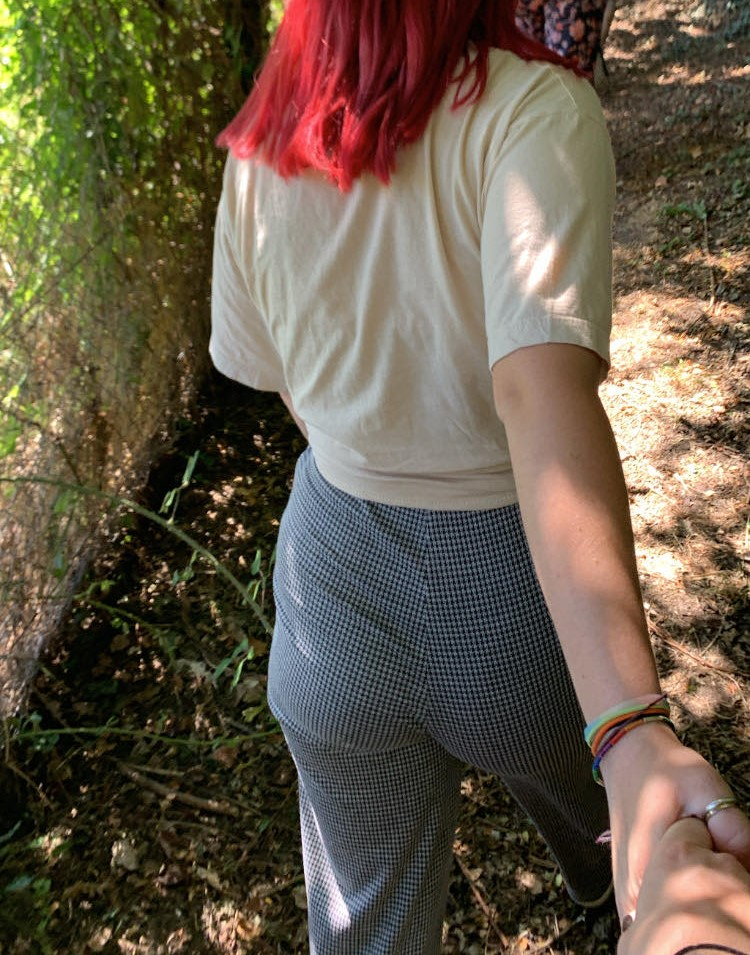

Tu es nostalgique de nos moments passés ensemble ?
Je comprends tout à fait..
En plus d'être un sentiment difficile à contrôler, il est aussi très difficile à rassurer.
Je sais très bien que des mots ne seront pas suffisant, rien ne le sera tant que nos moments ensemble ne
feront pas partie du quotidien.
Ce que je te propose en échange c'est d'imaginer l'avenir avec moi.
Jusqu'à maintenant j'ai beaucoup réutilisé d'ancienne photo, ici je veux prévoir d'en faire de nouvelles.
Qu'on trouve ensemble des situations spécifiques ou des endroits où l'on doit prendre ces photos.
Cela peut très bien être les mêmes photos que l'on a déjà faite mais cette fois, en version remasterisée ou alors en faire des
complètement inédites
Comme ça, dans un mois, un an voir plus et qu'on reviendra sur ce site, on verra ce qu'on avait comme envie.
J'actualiserai le site avec nos photos réussie dès que l'on les aura faites.
On pourra réellement voir les progrès que l'on a fait, les nouveaux moments passé ensemble et déjà préparer les suivants ❤️
On doit toujours rester orienté vers l'avenir.
